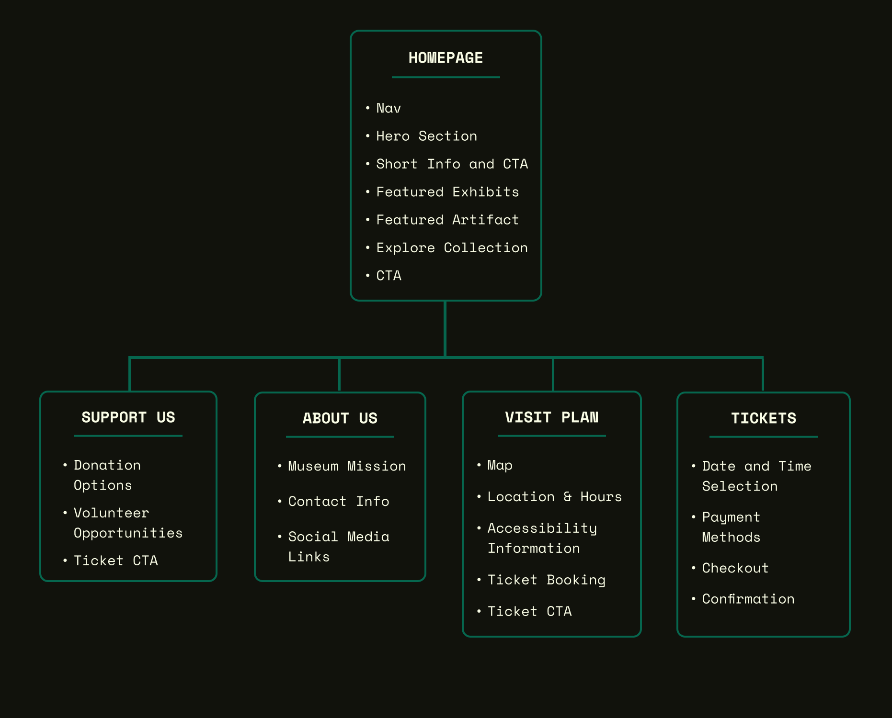

Nefer Museum is a practice project showcasing UX/UI and front-end development skills, bringing a fictional museum dedicated to ancient Egyptian artifacts to life online.
This case study presents my complete design and development process for the Nefer Museum website. From initial concept and user research to the final, interactive implementation, this project allowed me to explore a variety of design and development techniques. My goal was to create a captivating online experience for a diverse audience, from casual browsers to dedicated history enthusiasts, highlighting ancient Egyptian artifacts and culture.
September 2024 - October 2024
Creating an engaging online museum experience hinges on understanding the diverse motivations and needs of potential visitors. I conducted user research and analysis, delving into what makes these experiences so compelling and what can turn users away. This understanding informed every step of the design process.
Building upon my research, I developed three distinct user personas to represent the target audience. These personas helped me focus on specific user needs and goals throughout the design process.
Age: 45
Occupation: Teacher
Tech Proficiency: Moderate
Museum Habits: Frequent visitor, both in person and online. Deep interest in history and actively seeks out educational content.
Goals: Deepen his knowledge of ancient Egypt, find reliable historical information and educational resources, and plan his museum visits in detail.
Frustrations: Cluttered websites, lack of in-depth information, and difficulty navigating complex online exhibits.
Quote: ""I want a website that's easy to navigate and provides detailed information about the artifacts and exhibits."
Age: 38
Occupation: Engineer
Tech Proficiency:Low
Museum Habits: Occasional visitor, primarily interested in engaging his children with history and culture.
Goals: Find interactive and educational content for his children, plan family museum visits, and enjoy a seamless experience.
Frustrations: Websites that are not child-friendly, lack of interactive exhibits, and complicated ticketing or reservation processes.
Quote: ""I'm looking for a website that's both educational and engaging for my kids."
Age: 25
Occupation: Marketing
Tech Proficiency: High
Museum Habits: Infrequent visitor, enjoys exploring new things and appreciates visually appealing design.
Goals: Learn something new about ancient Egypt, find inspiration for creative projects, easily navigate the website, share interesting discoveries on social media.
Frustrations: Slow loading times, cluttered layouts, and confusing navigation.
Quote: ""I want a website that's visually appealing and easy to use. I don't have a lot of time, so I need to find information quickly."
To visualize user needs and feelings, I created an empathy map. This helped me understand the target audience’s perspective and motivations.
In the Define phase, I solidified the project goals, conducted a competitive audit to understand the landscape of existing museum websites, and developed a clear value proposition for the Nefer Museum.
Strengths: Vast online collection, detailed artifact information, virtual tours.
Weaknesses: Overwhelming amount of content, navigation could be improved.
Strengths: High-quality images, curated online exhibitions, educational resources.
Weaknesses: Strong focus on art might not appeal to all history enthusiasts, occasional slow loading times.
Strengths: Authenticity and historical significance, focused on Egyptian artifacts.
Weaknesses: Limited online presence, outdated design, lacks interactive elements.
The Nefer Museum website provides a unique online journey into ancient Egypt, making the museum’s collection and stories accessible, engaging, and user-friendly. Whether you are a history enthusiast, casual browser, or planning a visit, the website provides a rich and immersive experience.
The Ideate phase involved translating research insights and project goals into tangible design solutions. This encompassed information architecture, user flows, and initial sketches to shape the website’s structure and user experience.
The sitemap below visually represents the website's structure, ensuring intuitive navigation for users.
User flows were instrumental in mapping user journeys and optimizing key interactions. Here is an example of how the user would get to know the museum's location and opening time and from there buying a ticket.
User opens the website; the homepage displays featured artifacts and exhibits. To explore further, users can navigate to specific artifact information, the plan your visit section, or donate/support the museum. All these options allow for smooth transitions across the pages.
After defining user needs and project goals, I created low-fidelity wireframes to establish the layout and structure of key screens. These wireframes served as a blueprint for the website's functionality and helped me explore different design options before moving to high-fidelity mockups and prototyping. The initial wireframes focused on presenting essential information clearly and establishing a logical flow for the user journey.
Initial Wireframes (Homepage, About Us, Support Us, Plan Your Visit, Buy Tickets)
This initial interactive prototype, built with Figma, focused on core user flows such as browsing artifacts, exploring exhibits, and planning a visit. It allowed me to simulate the user experience and identify potential usability issues early in the design process. I shared this prototype with potential users for early feedback and to guide further iterations.
View Interactive Prototype (Figma)Usability testing was crucial for refining the design and ensuring the website met user needs. I conducted testing with representative users, gathering feedback and iterating based on their insights. This iterative process significantly improved the user experience.
I conducted moderated usability testing sessions with participants representing my target audience (history enthusiasts, families, casual visitors). I observed their interactions with the prototype, asked them to think aloud, and encouraged them to share feedback, focusing on identifying pain points and areas for improvement. This direct observation provided valuable qualitative data.
To gather broader feedback, I used unmoderated remote testing tools. This allowed participants to interact with the prototype at their own convenience and in their own environment. I collected quantitative data on task completion rates, error rates, and time spent on tasks, providing a broader perspective on usability.
Initial Design: The homepage lacked a clear visual hierarchy and key information, like hours and location, was not immediately visible. The "Explore" section felt generic and didn’t draw users in.
User Feedback: Users wanted quicker access to key information (hours, location) and a more engaging way to explore the collection. The journey icon wasn’t immediately understood.
Iteration: Added a prominent “Museum Info” section with hours and location. Redesigned the “Explore” section to showcase specific artifact categories with images, replacing the generic placeholder grid. Removed the journey icon for clarity.
Initial Design: The homepage lacked a dedicated space to highlight specific artifacts, which diminished the opportunity to showcase key pieces from the collection.
User Feedback: Users expressed a desire to see highlighted artifacts on the homepage to get a better sense of the museum’s collection and pique their interest.
Iteration: Added a “Featured Artifact” section to the homepage, showcasing a prominent artifact with a high-quality image and a brief description. This addition created a focal point and provided a more engaging introduction to the collection.
Initial Design: The “New Exhibits” section on the homepage was presented as a simple text list, which lacked visual appeal and didn’t effectively draw users’ attention.
User Feedback: Users wanted more visual information about new exhibits, such as images or videos, to make the section more engaging and informative.
Iteration: Redesigned the “New Exhibits” section to include visually appealing images or videos for each exhibit, along with concise descriptions and clear calls to action to learn more. This change significantly improved the section’s visual appeal and encouraged users to explore the exhibits.
Initial Design: The “Plan Your Visit” page lacked sufficient detail about accessibility features, which could be a barrier for users with disabilities.
User Feedback: Users emphasized the importance of detailed accessibility information to ensure they could comfortably visit the museum.
Iteration: Expanded the accessibility section to include specific information about wheelchair access, ramps, elevators, accessible restrooms, sensory-friendly options, and other relevant features. This addition demonstrated a commitment to inclusivity and provided essential information for visitors with disabilities.
Updated Wireframes after User Testing
The final design phase involved bringing all the research, ideation, and testing together to create a visually appealing, user-friendly, and immersive online experience. This encompassed refining the visual design, developing the user interface, and ensuring responsiveness across various devices.
The High Fidelity Designs
The visual design of the Nefer Museum website aimed to evoke the richness and mystery of ancient Egypt while maintaining a modern and accessible aesthetic. This was achieved through careful selection of colors, typography, and imagery.
#06664e (Deep Teal): This rich teal serves as the primary brand color, representing the historical depth and mystique of ancient Egypt. It's used for headings, interactive elements, and accents throughout the website.
#EFBF04 (Amber Gold): This warm gold is used sparingly for highlights and accents, evoking the precious metals often found in ancient Egyptian artifacts.
#000000 (Black): Provides a grounding backdrop, creating a sense of sophistication and allowing the other colors to pop.
#ffffff (White): Used for body text and UI elements, ensuring optimal readability and contrast against the darker background.
Roboto: This modern, geometric sans-serif font was chosen for its clarity, readability, and versatility. It provides a contemporary touch while complementing the historical theme.
High-quality images of artifacts, sourced from museums with open-access policies or Creative Commons licenses, are used throughout the website to enhance visual storytelling. Placeholder images generated using flux. Since there is no Nefer museum at the end of the day and these images hold a bit of the illusion, I'm not a fan of AI, but I am willing to learn and use it in ethical ways. Iconography is kept simple and consistent, primarily using icons from Font Awesome.
In bringing the Nefer Museum website to life, I implemented responsive design principles, ensuring a seamless user experience across various devices, from desktops to mobile phones. Technical considerations included performance optimization and the use of HTML, CSS, and JavaScript. I simply used Visual Studio Code, some Figma plugins and simple basic code from my part. And hosted it for free through GitHub, I would say that I'm not extremely proud of the code, but it works!
The Nefer Museum website, while a fictional project, provided a valuable opportunity to hone my UX/UI design and front-end development skills. From conducting user research and creating wireframes to developing a fully functional website, I managed the entire project lifecycle solo. This experience reinforced the importance of a user-centered design approach, iterative prototyping, and thorough testing, even in a hypothetical context.
Key takeaways include:
If this were a real-world project, I would continue iterating on the design based on user feedback and analytics. Future development could include implementing a CMS for easier content management, integrating e-commerce features for ticket sales and donations, and creating a virtual tour of the museum.
This project solidified my passion for creating engaging and meaningful digital experiences. I’m eager to apply my skills to real-world projects and collaborate with teams to bring innovative ideas to life. Thank you for taking the time to explore this case study. I welcome any feedback or questions about my work.